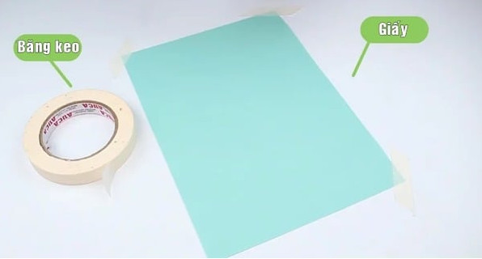
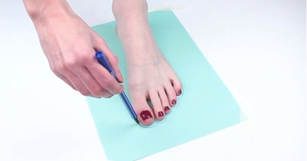
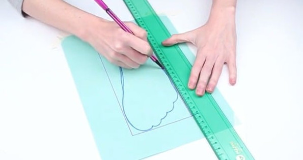

Tư vấn chọn size – Hướng dẫn chọn giày chuẩn nhất cho bạn!
Bất cứ thương hiệu nào cũng có những quy định riêng về size giày để người mua dễ dàng lựa chọn đôi giày phù hợp với chân mình. Với Sneaker cũng vậy, nếu không trực tiếp tới cửa hàng để thử thì bạn cần đo kích thước chân chính xác. Bài viết dưới đây Sneaker sẽ hướng dẫn bạn cách đo size giày Sneaker nam, nữ và trẻ em đơn giản, nhanh chóng và đúng chuẩn nhé
Để chọn được đôi giày có size phù hợp với chân của mình, trước hết bạn cần nắm được cách đo size chân ứng với size giày như sau:
Bước 1: Chuẩn bị dụng cụ Bạn cần chuẩn bị một tờ giấy trắng có kích thước lớn hơn bàn chân của mình, một chiếc bút và một chiếc thước kẻ

Bước 2: Đo kích thước bàn chân

Đầu tiên, bạn đặt tờ giấy trắng đã chuẩn bị xuống sàn phẳng, sau đó đặt chân lên và giữ chân một cách chắc chắn ở yên trên tờ giấy đó. Dùng bút để vẽ lại khung của bàn chân, để xác định được rõ ràng, bạn hãy đặt bút thẳng đúng và vuông góc với tờ giấy. Vạch chính xác theo đúng khuôn hình của bàn chân. Bạn cần phải chắc chắn là không được xê dịch chân trong khi tạm nghỉ đường vẽ của mình. Tiến hành đo kích thước của bàn chân.
Bước 3: Bước 3: Phác thảo bàn chân bằng đường thẳng

Sử dụng thước kẻ, vẽ một đường thẳng bên cạnh mỗi mặt bàn chân: Cạnh ngón chân, gót chân và hai bên.
Việc nắm được bảng quy đổi size giày sẽ giúp bạn chọn được đôi giày vừa chân nhất. Dưới đây là quy chuẩn về size giày quốc tế và cách chuyển đổi chi tiết. Cụ thể, có 4 quy chuẩn về quy đổi size giày cụ thể như sau:
Đây là mẫu size giày được sử dụng phổ biến ở Anh. Có 2 cách tính size giày chuẩn Anh:
Tính dựa theo chiều dài khuôn giày (Last) với công thức: Size UK = (3 x chiều dài last) – 25 (Last tính bằng inch)
Tính dựa theo kích thước bàn chân với công thức: Size UK = (3 x chiều dài bàn chân) – 23 (chiều dài tính bằng inch)
Bảng size giày US thường được áp dụng ở khu vực Mỹ, châu Mỹ, Canada. Cách quy đổi size giày chuẩn Mỹ được tính theo công thức:
Size nam US = (3 x chiều dài last) – 24 (last tính bằng inch) Size nam US ≈ (3 x chiều dài bàn chân) – 22 (chiều dài tính bằng inch)
Đây là cách tính cho size giày nam, còn đối với size giày nữ thì sẽ được tính theo công thức sau:
Size nữ US ≈ (3 x chiều dài bàn chân) – 20.5 (chiều dài tính bằng inch)
Size giày EU được sử dụng thông dụng ở các nước Châu Âu, phổ biến nhất là Đức, Tây Ban Nha, Ý, Pháp và một số nước Trung Đông, Châu Á. Size giày châu u được tính theo đơn vị Paris point (1 Paris point =2/3 cm). Cụ thể, bạn sẽ áp dụng cách tính theo công thức sau:
Size giày EU = 3/2 x chiều dài last (chiều dài tính bằng cm)
Size giày EU = 3/2 x (chiều dài bàn chân + 1.5) (chiều dài tính bằng cm)